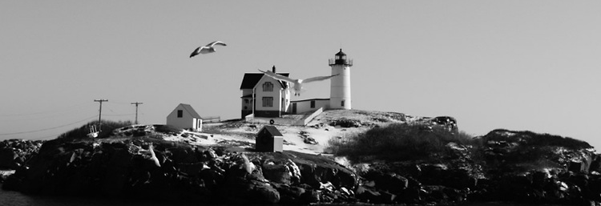

As you may know, my name is Caileb Stanley, and I am from York, Maine. I've worked for The Goldenrod for 5 years and Lobster Cove for 2. I'm studying business at the University of Maine currently, and hope to concentrate in International Business. I am really interested in learning languages and traveling. I took 4 years of German in High school and 2 years of Spanish as well. Next semester I will be taking Introduction to Arabic and Intermediate German at the University of Maine. I spent a month abroad in Germany the summer before my senior year and loved it. I was totally immersed in the language. This Christmas break I will be going to Southern France for 4 weeks to learn some French and be with my girlfriend. In the "Pictures" tab above you can see photos from some of my travels.

Above is the Nubble Lighthouse in my hometown of York, Maine.